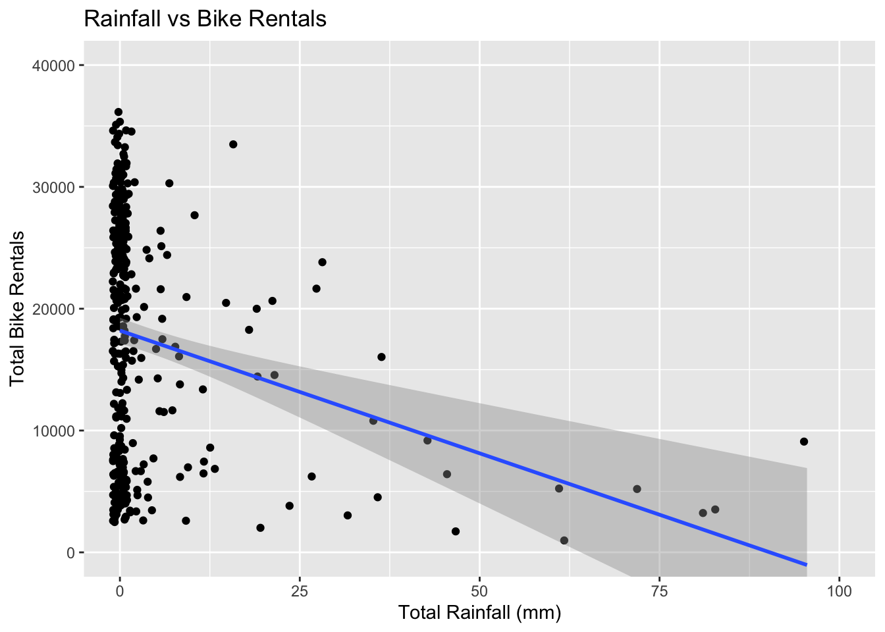
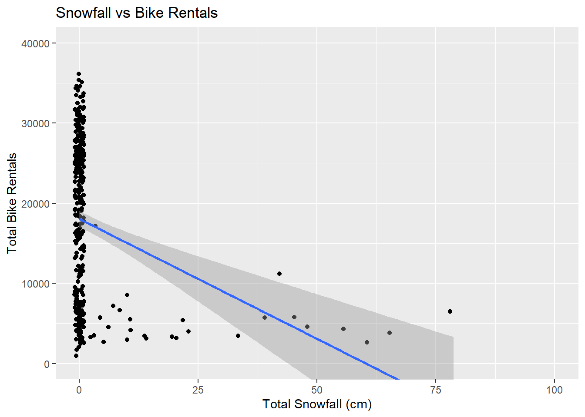
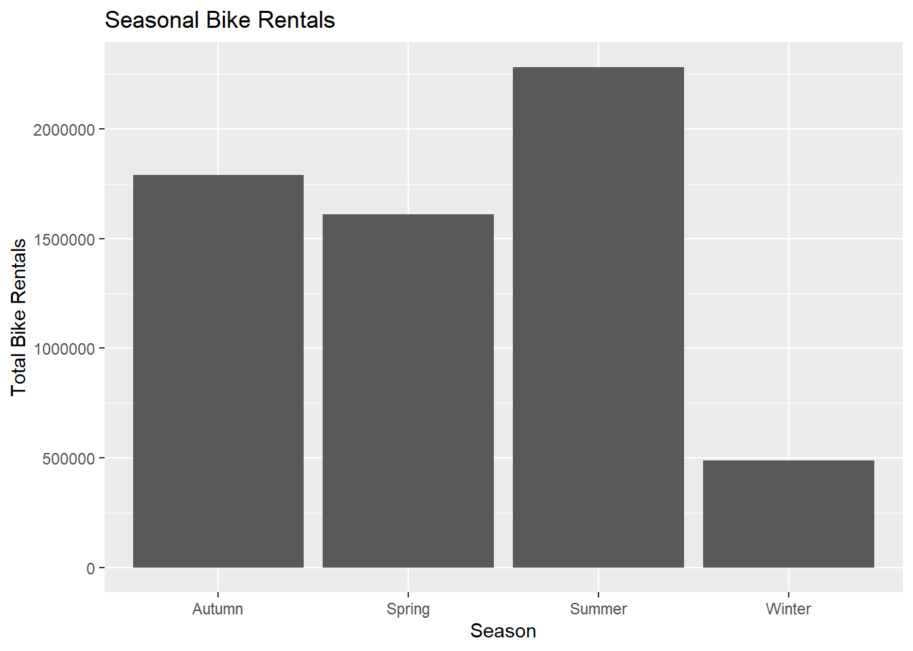
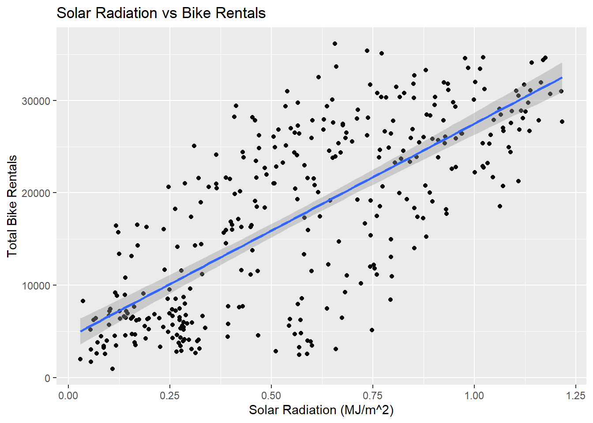
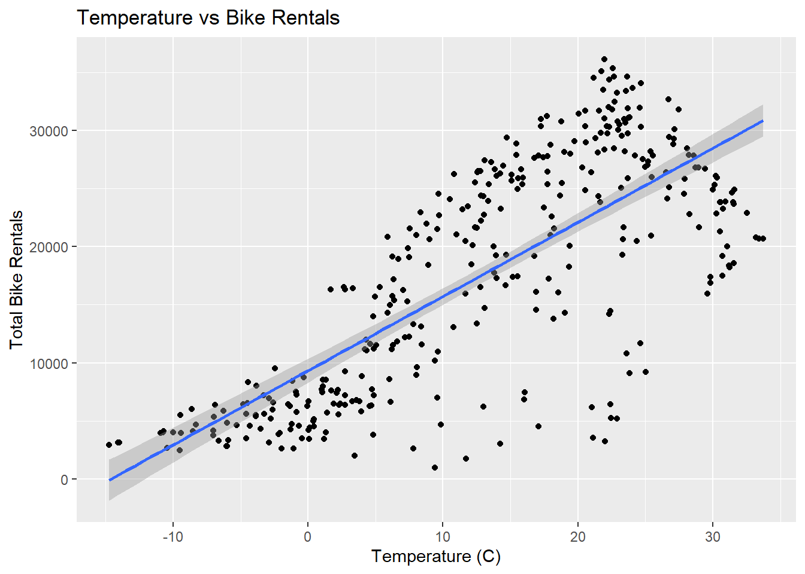

library(tidyverse)
library(tidymodels)
library(ggplot2)
library(parsnip)
library(workflows)
library(broom)Homework 8
Previous Document (Homework 7)
Preamble
The purpose of this homework is to practice with fitting linear models in R. The data is from the UCI Machine Learning Repository concerning bike sharing rentals, available here. First we “summon” the necessary packages.
Reading Data
We will read in the data directly from the source, rather than downloading it.
# an error results in this command, "fixed" by the call to "locale" command
raw_bike_data <- read_csv(
"https://www4.stat.ncsu.edu/online/datasets/SeoulBikeData.csv",
locale = locale(encoding = "latin1")
)EDA
Tidying
Before we start analysis, we will need to clean up the data.
- We begin by checking the data for missing values. The below command sums across all columns the counts of
NAvalues.
colSums(is.na(raw_bike_data)) Date Rented Bike Count Hour
0 0 0
Temperature(°C) Humidity(%) Wind speed (m/s)
0 0 0
Visibility (10m) Dew point temperature(°C) Solar Radiation (MJ/m2)
0 0 0
Rainfall(mm) Snowfall (cm) Seasons
0 0 0
Holiday Functioning Day
0 0 We observe there are no explicit NA values within the data.
- Now we check the data to ensure each of the variable values “make sense” in the context of the type.
summary(raw_bike_data) Date Rented Bike Count Hour Temperature(°C)
Length :8760 Min. : 0.0 Min. : 0.00 Min. :-17.80
N.unique : 365 1st Qu.: 191.0 1st Qu.: 5.75 1st Qu.: 3.50
N.blank : 0 Median : 504.5 Median :11.50 Median : 13.70
Min.nchar: 10 Mean : 704.6 Mean :11.50 Mean : 12.88
Max.nchar: 10 3rd Qu.:1065.2 3rd Qu.:17.25 3rd Qu.: 22.50
Max. :3556.0 Max. :23.00 Max. : 39.40
Humidity(%) Wind speed (m/s) Visibility (10m) Dew point temperature(°C)
Min. : 0.00 Min. :0.000 Min. : 27 Min. :-30.600
1st Qu.:42.00 1st Qu.:0.900 1st Qu.: 940 1st Qu.: -4.700
Median :57.00 Median :1.500 Median :1698 Median : 5.100
Mean :58.23 Mean :1.725 Mean :1437 Mean : 4.074
3rd Qu.:74.00 3rd Qu.:2.300 3rd Qu.:2000 3rd Qu.: 14.800
Max. :98.00 Max. :7.400 Max. :2000 Max. : 27.200
Solar Radiation (MJ/m2) Rainfall(mm) Snowfall (cm) Seasons
Min. :0.0000 Min. : 0.0000 Min. :0.00000 Length :8760
1st Qu.:0.0000 1st Qu.: 0.0000 1st Qu.:0.00000 N.unique : 4
Median :0.0100 Median : 0.0000 Median :0.00000 N.blank : 0
Mean :0.5691 Mean : 0.1487 Mean :0.07507 Min.nchar: 6
3rd Qu.:0.9300 3rd Qu.: 0.0000 3rd Qu.:0.00000 Max.nchar: 6
Max. :3.5200 Max. :35.0000 Max. :8.80000
Holiday Functioning Day
Length :8760 Length :8760
N.unique : 2 N.unique : 2
N.blank : 0 N.blank : 0
Min.nchar: 7 Min.nchar: 2
Max.nchar: 10 Max.nchar: 3
Both numeric and categorical data appear to be in appropriate ranges.
- The date column was incorrectly read in as a
chartype so we will convert it to the appropriatedatetype. We use thedmy(for “day-month-year”) command from thelubridatepackage.
clean_bike_data <- raw_bike_data
clean_bike_data$Date <- dmy(clean_bike_data$Date)
head(clean_bike_data$Date)[1] "2017-12-01" "2017-12-01" "2017-12-01" "2017-12-01" "2017-12-01"
[6] "2017-12-01"- Now we adjust the remaining
chartype variables to factors.
clean_bike_data$Seasons <- as.factor(clean_bike_data$Seasons)
clean_bike_data$Holiday <- as.factor(clean_bike_data$Holiday)
clean_bike_data$`Functioning Day` <- as.factor(clean_bike_data$`Functioning Day`)
clean_bike_data |> select(c(Seasons, Holiday, `Functioning Day`))# A tibble: 8,760 × 3
Seasons Holiday `Functioning Day`
<fct> <fct> <fct>
1 Winter No Holiday Yes
2 Winter No Holiday Yes
3 Winter No Holiday Yes
4 Winter No Holiday Yes
5 Winter No Holiday Yes
6 Winter No Holiday Yes
7 Winter No Holiday Yes
8 Winter No Holiday Yes
9 Winter No Holiday Yes
10 Winter No Holiday Yes
# ℹ 8,750 more rows- Finally, we will rename all the variables to more “friendly” names.
clean_bike_data <- clean_bike_data |> rename(
date = Date,
rent_count = `Rented Bike Count`,
hour = Hour,
temp = `Temperature(°C)`,
humidity = `Humidity(%)`,
wind_speed = `Wind speed (m/s)`,
visibility = `Visibility (10m)`,
dew_point = `Dew point temperature(°C)`,
sun_radiation = `Solar Radiation (MJ/m2)`,
rainfall = `Rainfall(mm)`,
snowfall = `Snowfall (cm)`,
season = Seasons,
holiday = Holiday,
functional_hour = `Functioning Day`
)Fine-Tuning
Now that the data is formatted ideally, we can do some basic analysis.
- First, let’s observe summary statistics.
summary(clean_bike_data) date rent_count hour temp
Min. :2017-12-01 Min. : 0.0 Min. : 0.00 Min. :-17.80
1st Qu.:2018-03-02 1st Qu.: 191.0 1st Qu.: 5.75 1st Qu.: 3.50
Median :2018-06-01 Median : 504.5 Median :11.50 Median : 13.70
Mean :2018-06-01 Mean : 704.6 Mean :11.50 Mean : 12.88
3rd Qu.:2018-08-31 3rd Qu.:1065.2 3rd Qu.:17.25 3rd Qu.: 22.50
Max. :2018-11-30 Max. :3556.0 Max. :23.00 Max. : 39.40
humidity wind_speed visibility dew_point
Min. : 0.00 Min. :0.000 Min. : 27 Min. :-30.600
1st Qu.:42.00 1st Qu.:0.900 1st Qu.: 940 1st Qu.: -4.700
Median :57.00 Median :1.500 Median :1698 Median : 5.100
Mean :58.23 Mean :1.725 Mean :1437 Mean : 4.074
3rd Qu.:74.00 3rd Qu.:2.300 3rd Qu.:2000 3rd Qu.: 14.800
Max. :98.00 Max. :7.400 Max. :2000 Max. : 27.200
sun_radiation rainfall snowfall season
Min. :0.0000 Min. : 0.0000 Min. :0.00000 Autumn:2184
1st Qu.:0.0000 1st Qu.: 0.0000 1st Qu.:0.00000 Spring:2208
Median :0.0100 Median : 0.0000 Median :0.00000 Summer:2208
Mean :0.5691 Mean : 0.1487 Mean :0.07507 Winter:2160
3rd Qu.:0.9300 3rd Qu.: 0.0000 3rd Qu.:0.00000
Max. :3.5200 Max. :35.0000 Max. :8.80000
holiday functional_hour
Holiday : 432 No : 295
No Holiday:8328 Yes:8465
There are 295 observations occurring within a non-functional hour, rendering those observations irrelevant to our analysis, so we will need to remove them from our data set.
functional_bike_data <- clean_bike_data |> filter(
functional_hour == "Yes"
)
summary(functional_bike_data$functional_hour) No Yes
0 8465 - Now that we have a fully functional, tidied data set, let’s perform some analyses on it. We will summarize across the hours so each day has one observation.
bike_data <- functional_bike_data |> group_by(date, season, holiday) |>
summarize(
total_rent_count = sum(rent_count),
total_rainfall = sum(rainfall),
total_snowfall = sum(snowfall),
mean_temp = mean(temp),
mean_humidity = mean(humidity),
mean_wind_speed = mean(wind_speed),
mean_visibility = mean(visibility),
mean_dew_point = mean(dew_point),
mean_sun_radiation = mean(sun_radiation)
)
head(bike_data)# A tibble: 6 × 12
# Groups: date, season [6]
date season holiday total_rent_count total_rainfall total_snowfall
<date> <fct> <fct> <dbl> <dbl> <dbl>
1 2017-12-01 Winter No Holiday 9539 0 0
2 2017-12-02 Winter No Holiday 8523 0 0
3 2017-12-03 Winter No Holiday 7222 4 0
4 2017-12-04 Winter No Holiday 8729 0.1 0
5 2017-12-05 Winter No Holiday 8307 0 0
6 2017-12-06 Winter No Holiday 6669 1.3 8.6
# ℹ 6 more variables: mean_temp <dbl>, mean_humidity <dbl>,
# mean_wind_speed <dbl>, mean_visibility <dbl>, mean_dew_point <dbl>,
# mean_sun_radiation <dbl>Analysis
Numeric Summary
- We have the data set we need, so let’s perform some basic analyses on them, beginning with a simple summary.
summary(bike_data) date season holiday total_rent_count
Min. :2017-12-01 Autumn:81 Holiday : 17 Min. : 977
1st Qu.:2018-02-27 Spring:90 No Holiday:336 1st Qu.: 6967
Median :2018-05-28 Summer:92 Median :18563
Mean :2018-05-28 Winter:90 Mean :17485
3rd Qu.:2018-08-24 3rd Qu.:26285
Max. :2018-11-30 Max. :36149
total_rainfall total_snowfall mean_temp mean_humidity
Min. : 0.000 Min. : 0.000 Min. :-14.738 Min. :22.25
1st Qu.: 0.000 1st Qu.: 0.000 1st Qu.: 3.304 1st Qu.:47.58
Median : 0.000 Median : 0.000 Median : 13.738 Median :57.17
Mean : 3.576 Mean : 1.863 Mean : 12.776 Mean :58.17
3rd Qu.: 0.500 3rd Qu.: 0.000 3rd Qu.: 22.592 3rd Qu.:67.71
Max. :95.500 Max. :78.700 Max. : 33.742 Max. :95.88
mean_wind_speed mean_visibility mean_dew_point mean_sun_radiation
Min. :0.6625 Min. : 214.3 Min. :-27.750 Min. :0.02917
1st Qu.:1.3042 1st Qu.:1087.0 1st Qu.: -5.188 1st Qu.:0.28333
Median :1.6583 Median :1557.8 Median : 4.612 Median :0.56500
Mean :1.7261 Mean :1434.0 Mean : 3.954 Mean :0.56773
3rd Qu.:1.9542 3rd Qu.:1874.3 3rd Qu.: 14.921 3rd Qu.:0.82000
Max. :4.0000 Max. :2000.0 Max. : 25.038 Max. :1.21667 Graphs
Now let’s examine some plots. First, let’s relate rainfall to total rentals.
ggplot(data = bike_data,
aes(x = total_rainfall, y = total_rent_count)) +
geom_jitter(width = 1) +
geom_smooth(method = lm) +
coord_cartesian(xlim = c(0, 100), ylim = c(0, 40000)) +
labs(x = "Total Rainfall (mm)",
y = "Total Bike Rentals",
title = "Rainfall vs Bike Rentals")
It looks like an inverse relation exists between rainfall and rentals. Now let’s do the same but for snowfall. One would assume a similar relationship exists.
ggplot(data = bike_data,
aes(x = total_snowfall, y = total_rent_count)) +
geom_jitter(width = 1) +
geom_smooth(method = lm) +
coord_cartesian(xlim = c(0, 100), ylim = c(0, 40000)) +
labs(x = "Total Snowfall (cm)",
y = "Total Bike Rentals",
title = "Snowfall vs Bike Rentals")
Not surprisingly, this seems more stark; after all, snow is more dangerous for bike rides and some people even prefer to ride in the rain. Let’s examine the rentals across each of the four seasons.
ggplot(data = bike_data,
aes(x = season, y = total_rent_count)) +
geom_col() +
labs(x = "Season",
y = "Total Bike Rentals",
title = "Seasonal Bike Rentals")
It appears people prefer sunny weather or cooler, but not frigid, temperatures, and this is practical. Let’s touch on this last thought with two more comparisons: solar radiation and temperature, respectively.
ggplot(data = bike_data,
aes(x = mean_sun_radiation, y = total_rent_count)) +
geom_point() +
geom_smooth(method = lm) +
labs(x = "Solar Radiation (MJ/m^2)",
y = "Total Bike Rentals",
title = "Solar Radiation vs Bike Rentals")
Indeed, sunnier weather seems directly proportional to bike rentals, albeit not within as narrow a band as our rain or snow fall.
ggplot(data = bike_data,
aes(x = mean_temp, y = total_rent_count)) +
geom_point() +
geom_smooth(method = lm) +
labs(x = "Temperature (C)",
y = "Total Bike Rentals",
title = "Temperature vs Bike Rentals")
As with the sunnier weather, temperature seems directly proportional to bike rentals.
Correlation
Finally, let’s explore combinations of correlations among numeric variables.
cor(bike_data[,4:12]) # uses just the numeric columns total_rent_count total_rainfall total_snowfall mean_temp
total_rent_count 1.00000000 -0.23910905 -0.26529110 0.753076732
total_rainfall -0.23910905 1.00000000 -0.02313404 0.144517274
total_snowfall -0.26529110 -0.02313404 1.00000000 -0.266963662
mean_temp 0.75307673 0.14451727 -0.26696366 1.000000000
mean_humidity 0.03588697 0.52864263 0.06539191 0.404167486
mean_wind_speed -0.19288142 -0.10167578 0.02088156 -0.260721792
mean_visibility 0.16599375 -0.22199387 -0.10188902 0.002336683
mean_dew_point 0.65047655 0.26456621 -0.20955286 0.962796255
mean_sun_radiation 0.73589290 -0.32270413 -0.23343056 0.550274301
mean_humidity mean_wind_speed mean_visibility mean_dew_point
total_rent_count 0.03588697 -0.19288142 0.165993749 0.6504765
total_rainfall 0.52864263 -0.10167578 -0.221993866 0.2645662
total_snowfall 0.06539191 0.02088156 -0.101889019 -0.2095529
mean_temp 0.40416749 -0.26072179 0.002336683 0.9627963
mean_humidity 1.00000000 -0.23425778 -0.559177334 0.6320473
mean_wind_speed -0.23425778 1.00000000 0.206022636 -0.2877032
mean_visibility -0.55917733 0.20602264 1.000000000 -0.1535516
mean_dew_point 0.63204729 -0.28770322 -0.153551591 1.0000000
mean_sun_radiation -0.27444967 0.09612635 0.271395906 0.3831571
mean_sun_radiation
total_rent_count 0.73589290
total_rainfall -0.32270413
total_snowfall -0.23343056
mean_temp 0.55027430
mean_humidity -0.27444967
mean_wind_speed 0.09612635
mean_visibility 0.27139591
mean_dew_point 0.38315713
mean_sun_radiation 1.00000000The highest correlations with the number of rentals appears to be temperature, solar radiation, and a variable we did not explore in the graphs: dew point, with the weakest as humidity, visibility, and wind speed. It surprises the author that rainfall and snowfall were not more highly correlated.
Modelling
Split the Data
First we split the data into a training and test set (75/25 split), stratified across the seasons, creating a 10 fold cross-validation (CV) split.
set.seed(44)
bike_split <- initial_split(bike_data,
prop = 0.75,
strata = season)
train_data <- training(bike_split)
test_data <- testing(bike_split)
cv_folds <- vfold_cv(train_data,
v = 10,
strata = season)Fitting MLR Models
First Recipe
For our first recipe, we want to remove the date variable as a predictor, but use it to create a new variable designating whether the date fell on a weekday or weekend. Then, we standardize all the numeric data (converts all the data to a \(z\)-score for its corresponding variable) and craft a dummy variable for the season, holiday, and our new workweek factors.
bike_rec_1 <- recipe(total_rent_count ~ .,
data = train_data) |>
update_role(date,
new_role = "date") |> # removes date as predictor
step_date(date,
features = "dow",
label = TRUE) |> # returns the day of the week (dow)
step_mutate(workweek = factor(
if_else(date_dow %in% c("Sat", "Sun"),
"weekend",
"weekday"))) |> # creates new variable as factor for weekend or weekday
step_rm(date_dow) |> # removes temporary variable from previous step
step_normalize(all_numeric_predictors()) |> # standardizes all numeric data
step_dummy(all_nominal_predictors()) # "dummifies" all categorical data
summary(bike_rec_1) # indicates roles of variables# A tibble: 12 × 4
variable type role source
<chr> <list> <chr> <chr>
1 date <chr [1]> date original
2 season <chr [3]> predictor original
3 holiday <chr [3]> predictor original
4 total_rainfall <chr [2]> predictor original
5 total_snowfall <chr [2]> predictor original
6 mean_temp <chr [2]> predictor original
7 mean_humidity <chr [2]> predictor original
8 mean_wind_speed <chr [2]> predictor original
9 mean_visibility <chr [2]> predictor original
10 mean_dew_point <chr [2]> predictor original
11 mean_sun_radiation <chr [2]> predictor original
12 total_rent_count <chr [2]> outcome originalSecond Recipe
The second recipe is identical to the first, except we add in interactions between seasons and holiday; seasons and temp; and temp and rainfall.
bike_rec_2 <- recipe(total_rent_count ~ .,
data = train_data) |>
update_role(date,
new_role = "date") |>
step_date(date,
features = "dow",
label = TRUE) |>
step_mutate(workweek = factor(
if_else(date_dow %in% c("Sat", "Sun"),
"weekend",
"weekday"))) |>
step_rm(date_dow) |>
step_normalize(all_numeric_predictors()) |>
step_dummy(all_nominal_predictors()) |> # end of first recipe
step_interact( ~ starts_with("season"):starts_with("holiday")) |>
step_interact( ~ starts_with("season"):starts_with("mean_temp")) |>
step_interact( ~ starts_with("mean_temp"):starts_with("total_rainfall"))Third Recipe
The last recipe is identical to the second, except we now include quadratic terms for each of the 10 numeric predictors.
bike_rec_3 <- recipe(total_rent_count ~ .,
data = train_data) |>
update_role(date,
new_role = "date") |>
step_date(date,
features = "dow",
label = TRUE) |>
step_mutate(workweek = factor(
if_else(date_dow %in% c("Sat", "Sun"),
"weekend",
"weekday"))) |>
step_rm(date_dow) |>
step_poly(all_numeric_predictors(), degree = 2) |> # adds quadratic terms
step_normalize(all_numeric_predictors()) |>
step_dummy(all_nominal_predictors()) |>
step_interact( ~ starts_with("season"):starts_with("holiday")) |>
step_interact( ~ starts_with("season"):starts_with("mean_temp")) |>
step_interact( ~ starts_with("mean_temp"):starts_with("total_rainfall"))Model Fit
Now we can set up our linear model fit to use the “lm” engine.
bike_lm <- linear_reg() |>
set_engine("lm")We continue by making workflows for each of the three recipes.
bike_workflow_1 <- workflow() |>
add_model(bike_lm) |>
add_recipe(bike_rec_1)
bike_workflow_2 <- workflow() |>
add_model(bike_lm) |>
add_recipe(bike_rec_2)
bike_workflow_3 <- workflow() |>
add_model(bike_lm) |>
add_recipe(bike_rec_3)Then we fit the models using our previous 10 fold CV.
cv_bike_1 <- bike_workflow_1 |>
fit_resamples(cv_folds)
cv_bike_2 <- bike_workflow_2 |>
fit_resamples(cv_folds)
cv_bike_3 <- bike_workflow_3 |>
fit_resamples(cv_folds)We need to see which of the three models works best by examining the CV errors.
collect_metrics(cv_bike_1)# A tibble: 2 × 6
.metric .estimator mean n std_err .config
<chr> <chr> <dbl> <int> <dbl> <chr>
1 rmse standard 3956. 10 133. pre0_mod0_post0
2 rsq standard 0.841 10 0.0130 pre0_mod0_post0collect_metrics(cv_bike_2)# A tibble: 2 × 6
.metric .estimator mean n std_err .config
<chr> <chr> <dbl> <int> <dbl> <chr>
1 rmse standard 3083. 10 332. pre0_mod0_post0
2 rsq standard 0.899 10 0.0204 pre0_mod0_post0collect_metrics(cv_bike_3)# A tibble: 2 × 6
.metric .estimator mean n std_err .config
<chr> <chr> <dbl> <int> <dbl> <chr>
1 rmse standard 2988. 10 323. pre0_mod0_post0
2 rsq standard 0.909 10 0.0180 pre0_mod0_post0Final Model
We see the third model has the lowest root-mean squared error (RMSE) and thus we will use it as a model to fit on the entire training set.
bike_best_model <- bike_workflow_3 |>
last_fit(bike_split)
collect_metrics(bike_best_model)# A tibble: 2 × 4
.metric .estimator .estimate .config
<chr> <chr> <dbl> <chr>
1 rmse standard 3685. pre0_mod0_post0
2 rsq standard 0.880 pre0_mod0_post0Finally, to “visualize” the model, we will extract the coefficients.
bike_best_model |> extract_fit_parsnip() |>
tidy() |>
print(n = Inf)# A tibble: 41 × 5
term estimate std.error statistic p.value
<chr> <dbl> <dbl> <dbl> <dbl>
1 (Intercept) 1.44e4 1879. 7.68 4.85e-13
2 total_rainfall_poly_1 -3.02e3 2796. -1.08 2.81e- 1
3 total_rainfall_poly_2 -3.84e2 1494. -0.257 7.97e- 1
4 total_snowfall_poly_1 -2.06e2 191. -1.08 2.82e- 1
5 total_snowfall_poly_2 1.62e1 190. 0.0854 9.32e- 1
6 mean_temp_poly_1 3.79e3 3881. 0.977 3.30e- 1
7 mean_temp_poly_2 -2.55e3 1479. -1.72 8.65e- 2
8 mean_humidity_poly_1 -1.37e3 1391. -0.987 3.25e- 1
9 mean_humidity_poly_2 -2.57e2 340. -0.757 4.50e- 1
10 mean_wind_speed_poly_1 -5.03e2 184. -2.73 6.84e- 3
11 mean_wind_speed_poly_2 2.95e2 178. 1.66 9.92e- 2
12 mean_visibility_poly_1 4.12e2 242. 1.70 8.97e- 2
13 mean_visibility_poly_2 -1.58e2 173. -0.916 3.61e- 1
14 mean_dew_point_poly_1 3.73e3 4508. 0.827 4.09e- 1
15 mean_dew_point_poly_2 -3.93e2 720. -0.546 5.86e- 1
16 mean_sun_radiation_poly_1 2.60e3 310. 8.37 6.06e-15
17 mean_sun_radiation_poly_2 -5.16e2 210. -2.45 1.49e- 2
18 season_Spring -3.24e3 2887. -1.12 2.64e- 1
19 season_Summer 4.80e3 10205. 0.470 6.39e- 1
20 season_Winter 1.14e5 71680. 1.59 1.14e- 1
21 holiday_No.Holiday 5.48e3 1501. 3.65 3.23e- 4
22 workweek_weekend -2.86e3 354. -8.09 3.63e-14
23 season_Spring_x_holiday_No.Holiday 1.70e3 2593. 0.656 5.13e- 1
24 season_Summer_x_holiday_No.Holiday -2.90e3 2951. -0.982 3.27e- 1
25 season_Winter_x_holiday_No.Holiday -1.13e5 71416. -1.58 1.15e- 1
26 season_Spring_x_mean_temp_poly_1 1.17e3 2748. 0.425 6.71e- 1
27 season_Spring_x_mean_temp_poly_2 3.96e3 1811. 2.18 3.00e- 2
28 season_Summer_x_mean_temp_poly_1 5.44e1 10827. 0.00503 9.96e- 1
29 season_Summer_x_mean_temp_poly_2 -4.90e3 4413. -1.11 2.68e- 1
30 season_Winter_x_mean_temp_poly_1 1.07e5 67072. 1.59 1.13e- 1
31 season_Winter_x_mean_temp_poly_2 5.49e4 35671. 1.54 1.25e- 1
32 season_Spring_x_holiday_No.Holiday_x_… 3.41e3 2693. 1.27 2.07e- 1
33 season_Spring_x_holiday_No.Holiday_x_… NA NA NA NA
34 season_Summer_x_holiday_No.Holiday_x_… NA NA NA NA
35 season_Summer_x_holiday_No.Holiday_x_… NA NA NA NA
36 season_Winter_x_holiday_No.Holiday_x_… -1.02e5 66799. -1.53 1.27e- 1
37 season_Winter_x_holiday_No.Holiday_x_… -4.89e4 35611. -1.37 1.71e- 1
38 mean_temp_poly_1_x_total_rainfall_pol… 2.68e1 3009. 0.00891 9.93e- 1
39 mean_temp_poly_1_x_total_rainfall_pol… 1.28e3 1615. 0.790 4.30e- 1
40 mean_temp_poly_2_x_total_rainfall_pol… 9.29e2 2189. 0.425 6.72e- 1
41 mean_temp_poly_2_x_total_rainfall_pol… -1.46e2 1104. -0.132 8.95e- 1